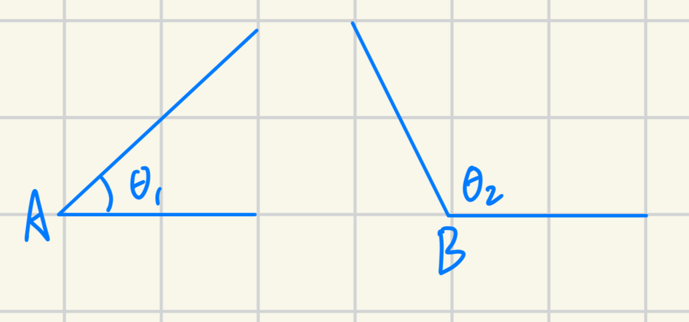
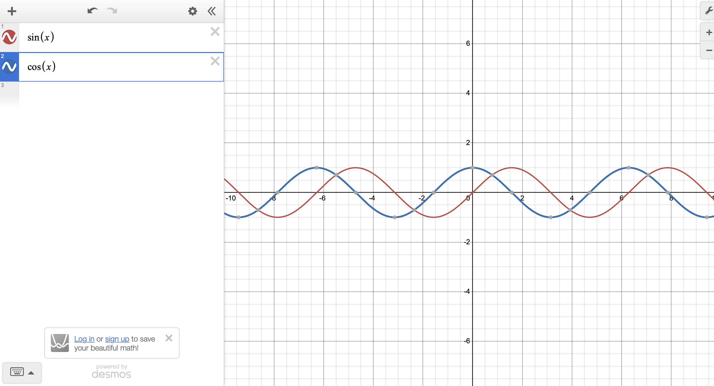
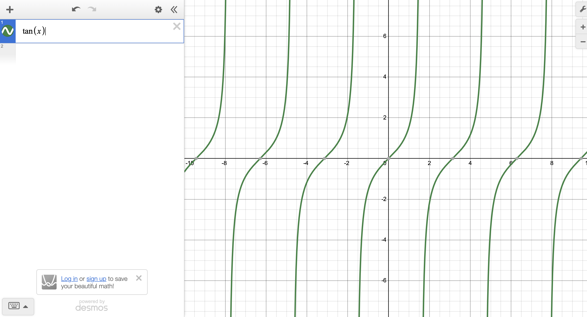
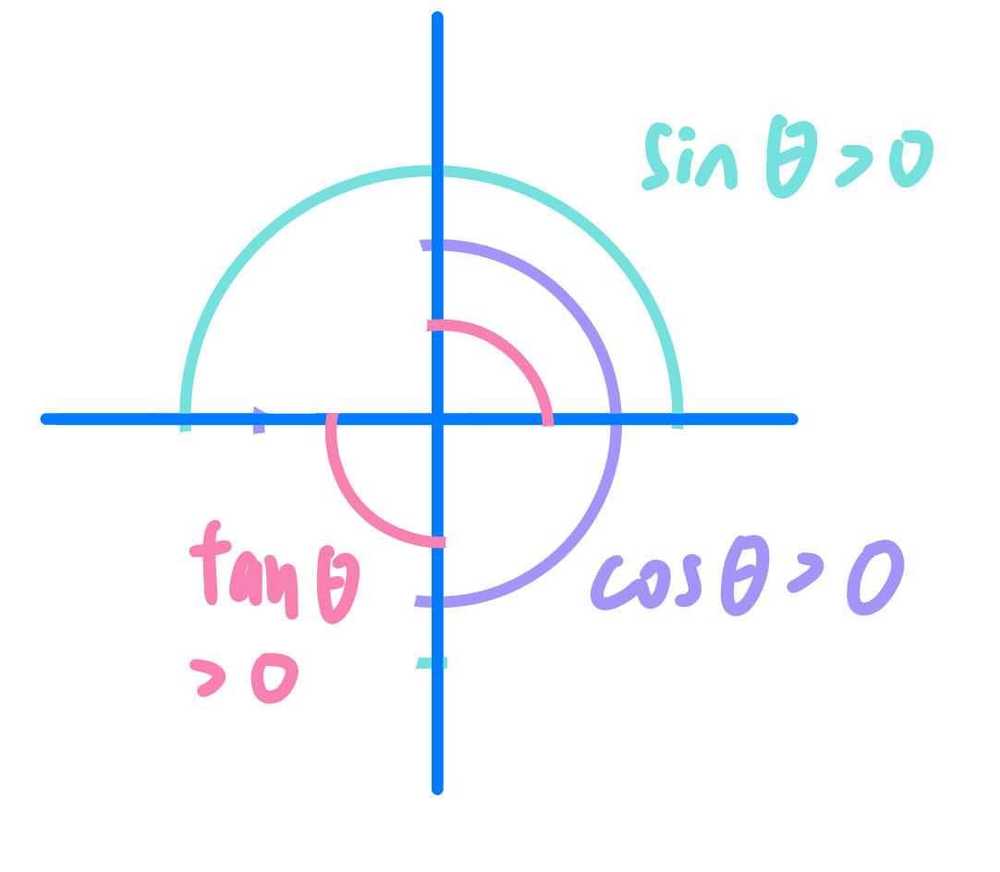
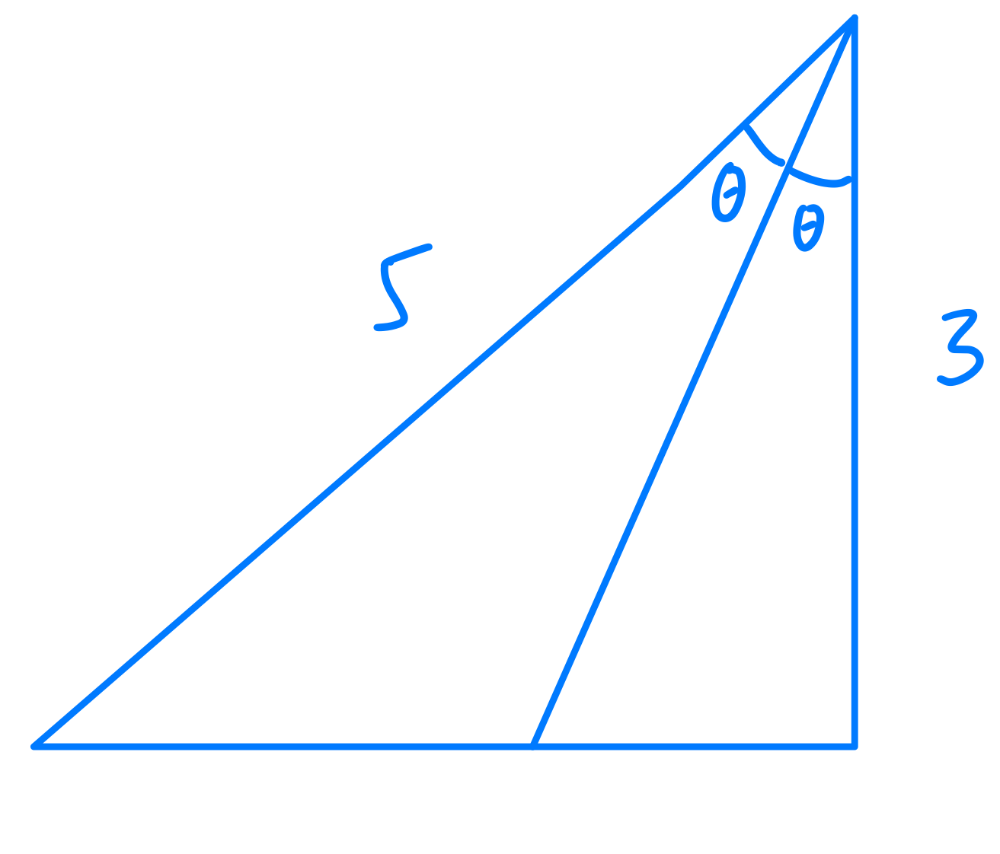
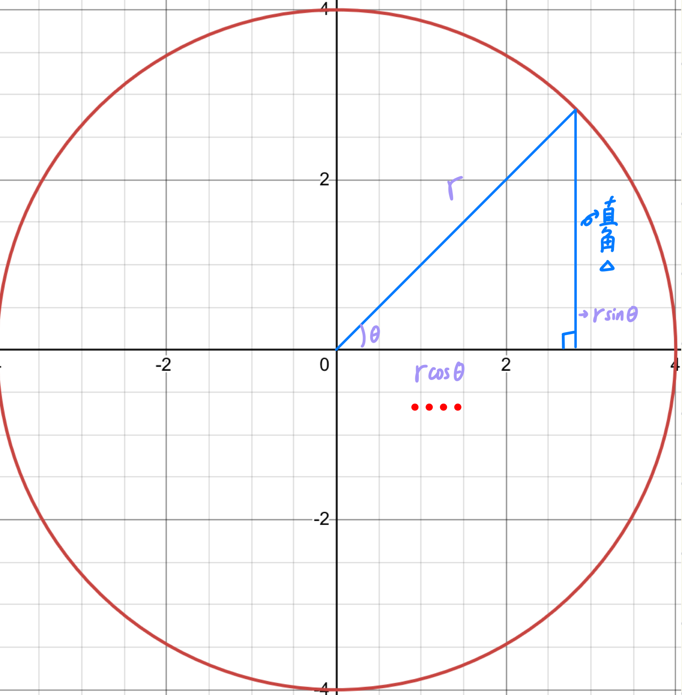
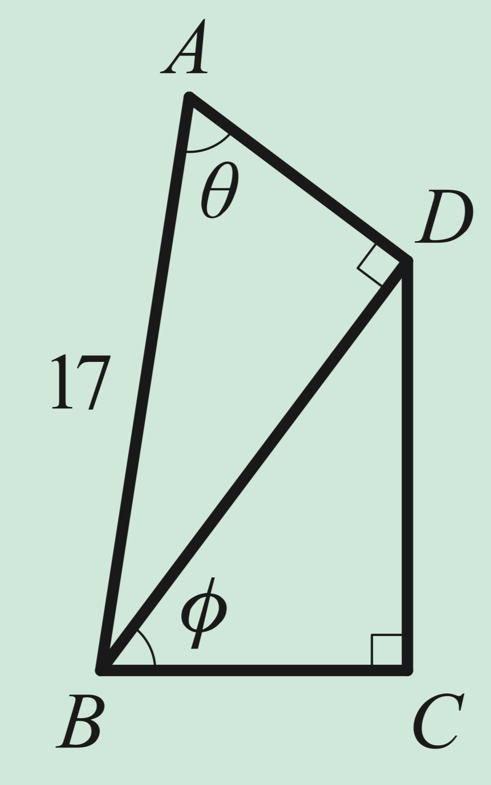

三角函數#
角#
今天你看到一個角長這樣
{kind=link}
一個角有兩個邊， 始邊 與 終邊 ，分別是一個角開始的邊與結束的邊
Note
假設有兩個角他是同界角(共用始邊與終邊) \(\Longleftrightarrow \theta_1 - \theta_2 = 360^\circ k, k \in \mathbb{Z}\)
Tip
標準位置角：始邊是X軸正向，若終邊再第一象限 \(\rightarrow\) 第一象限角, 第二象限 \(\rightarrow\) 第二象限角 以此類推
{kind=link}
那我們可以知道
其中 \(\tan \theta = \frac{\sin\theta}{\cos\theta}\)
如果背起來的話可以這樣記
Note
我們也可以記成
有趣的函數圖形#
\(\sin \theta\) 跟 \(\cos\theta\) 的函數圖形長這樣
{kind=link}
眼尖的你發現這個函數在每一個 \(2\pi\) 會重複一次(這個牽涉到弧度的概念，可以簡單理解為 \(2\pi = 360^\circ\) )
還有 \(\sin\) 跟 \(\cos\) 只有差 \(1.5\pi\) (270度)
{kind=link}
這個是tan的函數圖形，可以看到他非常的抽象，就是在 \(90^\circ\) 跟 \(270^\circ\) 會發散掉
三角函數的範圍#
{kind=link}
Attention
\(\tan 90^\circ\) 跟 \(\tan 270^\circ\) 未定義
假設今天a=5 b=12, c=13，那 \(\angle A\) 的三角函數式多少
然後聰明的你看了看發現 \(\angle B\) 的三角函數會等於
是不是非常神奇
{kind=link}
請問 \(\tan \theta = ?\)
Tip
下面兩條邊的比例(左比右)=上面兩條邊的比例(右比左)
那我們可以算出
其中 \(\frac{3}{2} = 4\times \frac{3}{8}\) ，4是下面那條邊的長度(3:4:5), \(\frac{3}{8}\) 是裡面那個三角形佔的比例
小紀錄
{kind=link}
Note
公式們
小提醒#
定義 \(\theta \in III\) ，那我們能不能說 \(\frac{\theta}{2} \in II\) ? 或者是說 \(\sin \theta > 0\) ，則 \(\sin\frac{\theta}{2} > 0\) ?
這兩個敘述在表面上看起來很合理，但如果今天 \(\theta\) 在 \(-120\) 的話他除二就會變成 \(-60\) 變成在第四象限，就不符合敘述，同理可證第二個敘述
Attention
角度的轉換#
\(180^\circ \pm \theta\)#
Tip
口訣：奇變偶不變，正負看象限(舉例 \(\sin(x^\circ + \theta)\) )
我們要先算x是幾個90度，如果是奇數，那就變函數(sin > cos, cos > sin)
再看正負（也就是括號裡面那一坨）對應 函數的正負值 ，該加負號就加負號
Attention
這個口訣對tan不適用
當立方和公式遇到三角函數#
小時候，我們學到
讓我們來看看有哪些題目可以使用到這些公式
先一波計算
\((\sin \theta - \cos \theta)^2 = \sin^2 \theta + 2\sin\theta\cos\theta + \cos^2 \theta = \frac{1}{4}\)
再因為 \(\sin^2 \theta + \cos^2 \theta = 1\) ,所以 \(\sin\theta\cos\theta=\frac{1}{4}\times\frac{1}{2} = \frac{1}{8}\)
\((\sin\theta+\cos\theta)^2 = ... = 1+2\times \frac{3}{8}, 所以 \sin\theta+\cos\theta = \frac{\sqrt{7}}{8}\)
\(\sin^3 \theta - \cos^3 \theta = ... = \frac{1}{2} \times (1+\frac{3}{8}) = \frac{11}{16}\)
Tip
仰角上看俯角往下看
小練習#
試求下面圖剩餘線段的長度#
{kind=link}
其中 \(\sin \theta = \frac{15}{17}, \cos \phi = \frac{3}{5}\)
根據上面的條件，我們可以知道 \(\overline{BD} = 15, \overline{BC} = 15\times\frac{3}{5}=9\) ，再推斷出 \(\overline{DC} = 4\times3=12\)
非常的完美